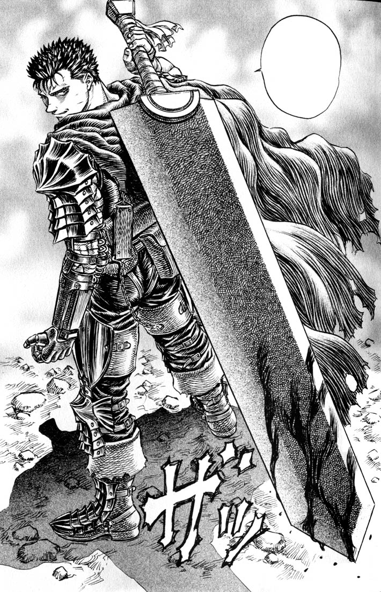

Guts

Guts is the main character from the manga Berserk. Bound with the brand of sacrifice, he is a gruff and cynical mercenary who travels from
land to land with his companions. He has devoted himself to on wiping the world of demons with his gigantic
sword, the Dragonslayer. He is a broken man, his whole life being surrounded by death and despair,
aptly named The Struggler.
- Guts is a loyal and compassionate character, risking his life for those close to him.
- Guts is a survivor. Being born from a corpse and abused by his adoptive father, his whole life he has had to overcome incredible hardships.
- Guts takes many weaker characters under his wing, selflessly turning others in need into strong warriors while saving them from their current situations.